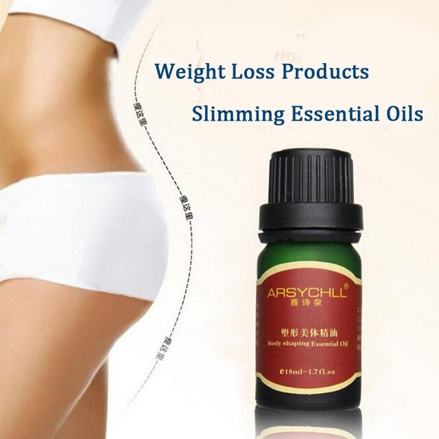
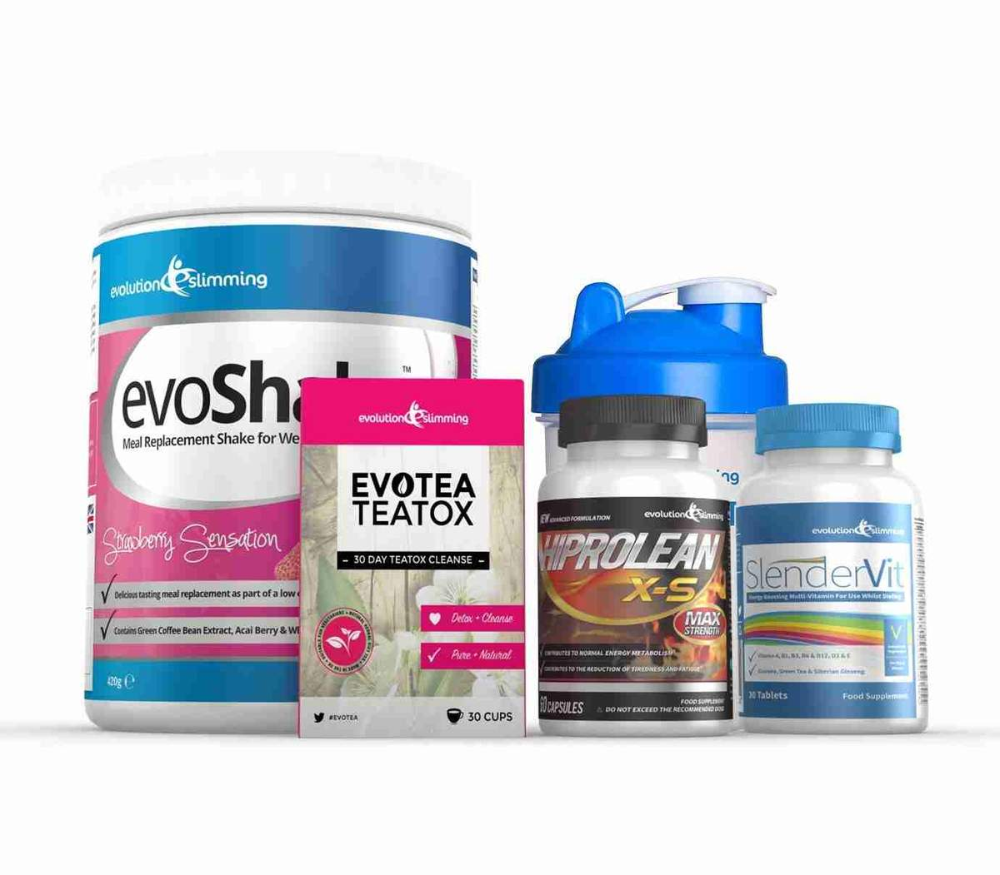

Shark Tank Weight Loss Products 2020: What's Real and What's Fake - Health Skeptic
2020.12.07 12:17

Skip to primary navigation Skip to main content Skip to primary sidebar Skip to footer
Health Skeptic
Natural Health Information & Reviews
Workout Programs Natural Remedies Pain Relief Weight Loss Insomnia & Sleep Aids Survival Home About Contact Disclosure Privacy Policy Terms of ServiceShark Tank Weight Loss Products 2020: What’s Real and What’s Fake
By Health Skeptic
Shark Tank is an immensely popular TV show that began in 2009. If you’re not familiar with the premise: entrepreneurs pitch their business ideas to investors, who decide on the show whether or not to give funding.
It’s a fun show, and it’s given a spotlight to a lot of new diet products . After all, millions of people out there are carrying extra pounds and are sick of diets that don’t work. A safe and effective way to lose weight is always going to be in demand.
This is a guide to the various weight loss products that have been featured on Shark Tank. As always, our goal is for you to make informed and safe choices when buying health products.
We also hope this will help you see through all the misinformation put out there by greedy marketers. The only thing worse than being scammed is taking a supplement that could cause you harm.
Related Reading: Our top-rated diet of 2020 has somehow gotten almost no publicity.
Misleading Advertising
Have you seen ads or spam emails about a diet pill that was “featured on Shark Tank”? There are a ton of them out there. But these misleading advertisements always end up taking you to some other diet offer. Often it’s a “keto pill” supplement or something similar.
You’ll see ads that look something like this:
What you see here is highly misleading. The two sisters in the picture were not pitching diet pills. Rather, they were pitching a children’s dance company business. No weight loss pill has ever gotten the “biggest deal in Shark Tank history”.
Mark Cuban, a regularly featured shark on the show, has taken notice:
This is a scam. If you see anything like this please report them to the @FTC https://t.co/naXO47HQcj
— Mark Cuban (@mcuban) July 5, 2018
Unfortunately this is the world of internet health products in 2020. There are so many online retailers now that it seems the Fair Trade Commission can hardly keep up.
The point is: don’t assume these marketers are telling the truth. Refer to this guide if you’re wondering whether a weight loss product was actually featured on Shark Tank.
CLA Safflower Oil
Conjugated linoleic acid (CLA) safflower oil is a trendy weight loss supplement that you can buy online or at a supplement retailer. There is a limited evidence suggesting that it helps with weight loss . Further research is needed.
Dr. Russell Greenfield from UNC Chapel Hill School of Medicine wrote about CLA on Dr. Oz’s blog. From his article:
So, should you go out and start taking safflower oil products for weight loss? The answer, for now, is no.
And why not? Because the approach is based primarily on the results of a single small study, a study whose weaknesses are significant.
Full article originally published on doctoroz.com
Despite claims otherwise, there was never a CLA safflower oil supplement featured on Shark Tank. Maybe the sharks are too savvy to invest in something that is unproven at this point.
Weight Loss 101 (or Why Your Diets Have Failed)
Ketogenic Diet Pills
There are about a million ketogenic diet pills out there, and probably have of them claim they were “featured on Shark Tank” in their advertising.
Again, the claims aren’t true. We couldn’t find any keto diet pills or keto supplements that were featured on Shark Tank.
Supplements like KetoBHB, and Keto Slim actually make this claim on their Amazon marketplace listing. How they get away with this, we don’t know.
By the way, do you really need a keto diet pill? The answer is probably no. Instead, following a proven ketogenic diet blueprint should give you the results you want. Your wallet will thank you for passing on unnecessary pills.
NUI Keto Cookies
In November of 2018, company NUI pitched their “keto cookies” concept and scored a $250k investment from guest shark Charles Barkley. The cookies aren’t cheap but they are indeed a keto-friendly option for snacking if you want to follow a strict ketogenic diet.
Check them out on Amazon here.
Cave Shake
Checking the gluten-free, paleo, vegan and low-carb boxes, Cave Shake has wide appeal. The brand of pre-made shakes, created by Holly Heath and Billie Cavallaro, appeared on an October 2018 episode of Shark Tank. After entertaining a few offers, they ended up making a deal with Charles Barkley for $250,000 and a stake in the company.
Mother Beverage
Apple cider vinegar is one of our blog’s favorite weight loss drinks. There is sufficient evidence to say that it helps promote weight loss . Plus you can buy it cheap at the grocery store.
In late 2018, a company called Mother Beverage appeared on Shark Tank. They pitched an apple cider vinegar drink that was specially formulated to go easy on your esophagus. It is meant to be more than just a weight loss drink even though it can help with weight control.
This is not to be confused with a 2015 episode that featured “drinking vinegars” , which was not meant as a weight loss drink. (That pitch was unsuccessful in getting funding.)
To be clear: apple cider vinegar for weight loss is not a scam. We recommend going with a store bought liquid brand. Mother Beverage also sells their formulation online at a slightly higher price, but it may be worth it if you have acid reflux issues. Apple cider vinegar pills are unnecessary and just a way for companies to take more of your money.
Mealenders
The Mealenders supplement was featured in a 2017 episode of Shark Tank. The dietary supplement is meant to induce you to stop eating through natural biological signals. You take it during the moments immediately after a meal before you feel full to keep you from overeating.
The concept didn’t get any investment during the show , but business immediately increased following their exposure.
Vade Nutrition Dissolvable Whey Protein
Even though whey protein isn’t only meant for weight loss, we include it here for completeness. Vade nutrition co-founders Joe and Megan Johnson appeared on a November 2018 episode pitching their dissolvable whey protein scoops. (Anybody who has tried to bring protein powder to the gym will understand the usefulness.)
The company was relatively small at the time of their appearance, but they still managed to obtain a $700,000 investment from retired baseball star Alex Rodriguez .
22lbs GONE in 13 days with this strange “carb-pairing” trick
Be Fit Food
A small company called Be Fit Food had quite a successful pitch on the Australian version of Shark Tank. Dietitian Kate Save and surgeon Dr. Geoff Draper were able to raise a considerable amount of money for their pre-planned ketogenic meal business.
We have not researched Be Fit Food yet, but this review was detailed and helpful. It seems to be a promising health startup that was indeed featured on Shark Tank. It is best for ketogenic diet adherents.
[This list will be updated regularly, so check back for updates!]Facebook 1 Twitter
Filed Under: Weight Loss
Health Skeptic is a trusted resource for natural health news, tips, and product reviews.
Primary Sidebar
Recent Posts
A Guide To Prescription Medications For Sciatic Nerve Pain [2020] 12 Natural Things To Help You Sleep Better Tonight [2020 Update] Summer Diets For Weight Loss: 3 Ways To Get Faster Results How to Combat Post-quarantine Separation Anxiety in Dogs Once Coronavirus Pandemic Subsides Shark Tank Weight Loss Products 2020: What’s Real and What’s Fake The Best Detox Cleanses For Weight Loss (2020 Guide) Best Diet Plan and Menu For Beginners: 28-Day Challenge How To See Visible Abs Without a Low Body Fat Percentage Magnesium Deficiency: A Serious (But Fixable) Problem 4 Reasons You Are Not Losing Weight With The Keto DietMedical Disclaimer
All the information on this website is published in good faith and for general information purpose only. Healthskeptic.org does not make any warranties about the completeness, reliability and accuracy of this information. Any action you take upon the information you find on this website (healthskeptic.org), is strictly at your own risk. Healthskeptic.org will not be liable for any losses and/or damages in connection with the use of our website.Footer
Sitemap Medical DisclaimerAffiliate Disclosure
Heads up: I use affiliate links throughout this website. This means that I may receive a commission if you end up buying something based on my review or opinion . If you do buy any product based on my advice — thanks so much! You’re helping me to keep this site running and review even more great products:)
Copyright © 2020 · Healthskeptic.Org
1- Weight Loss? Easy! The Best Supplements to Keep Fit ...
- 12 Popular Weight Loss Pills and Supplements Reviewed
- 13 best Patanjali Products for weight loss (With Price)
- Weight Loss: Buy Weight Loss Products Online At Best ...
- Amazon.com: Weight Loss: Health & Household: Supplements ...
- Shark Tank Weight Loss Products 2020: What's Real and What ...
- Top 10 Weight Loss Products On Amazon (Of ALL TIME ...
- Dietary supplements for weight loss - Mayo Clinic
- 11 Supplements and Herbs for Weight Loss Explained - WebMD
- 10 BEST Weight-Loss Products That Actually Work | TDE
- Weight Loss? Easy! The Best Supplements to Keep Fit ...
A safe and effective way to lose weight is always going to be in demand. This is a guide to the various weight loss products that have been featured on Shark Tank. As always, our goal is for you to make informed and safe choices when buying health products.
- 12 Popular Weight Loss Pills and Supplements Reviewed
TruVision Health Weight Loss: Order TruVision weight loss combo. TruVision Health trufix and trucontrol sample. Buy TruVision. Lose avg. 4-7 lbs in the 1st week. New Truvy products.
- 13 best Patanjali Products for weight loss (With Price)
2019 Best Weight Loss Products. Though I’m still on my weight loss journey and have about another 30 pounds to lose, I am 30 pounds below my max weight of nearly 200 pounds.No, that doesn’t make me a weight loss expert, but I do feel like I know at least a little about what is truly helpful and what is not.Especially for those of us who have problems committing long-term to workout plans ...
- Weight Loss: Buy Weight Loss Products Online At Best ...
Buy Weight Loss Supplements online at Chemist Warehouse and enjoy huge discounts across the entire range. Shop products online or in store today. Exclusive Offers And Big Savings Delivered to your inbox! sign up. Required field. Invalid email address. Please try again. There was an issue. Please reload the page try again.
- Amazon.com: Weight Loss: Health & Household: Supplements ...
The average weight loss in the supplement group was 4.2 pounds (1.9 kilograms). The average weight loss in the placebo group was 0.9 pounds (0.4 kilograms). While these results are intriguing, the fact that the trial was small and lasted only eight weeks means the results can't be reliably generalized to real-world situations.
- Shark Tank Weight Loss Products 2020: What's Real and What ...
The low levels of fat and carbohydrates in the best protein powders makes them one of the best weight loss products that actually work. Dog. Me and my girlfriend recently got a dog. What a great way to get your ass off the couch! Since I care a lot about our dog I feel that I have to get out on long walks, for the dog’s sake.
- Top 10 Weight Loss Products On Amazon (Of ALL TIME ...
There are many different weight loss solutions out there. This includes all sorts of pills, drugs and natural supplements. These are claimed to help you lose weight, or at least make it easier to ...
- Dietary supplements for weight loss - Mayo Clinic
The Best Trader Joe's Products For Weight Loss We know the popular supermarket chain avoids marketing their products, and that may be why countless hidden health gems secretly lurk on TJ's shelves.
- 11 Supplements and Herbs for Weight Loss Explained - WebMD
Since weight loss is a function of burning more calories than your body absorbs, a weight loss pill can tackle one or both of these potential avenues to generate weight loss. Weight loss pills are great for people on a diet, as they are a natural compliment to an exercise and diet-focused weight loss program .
- 10 BEST Weight-Loss Products That Actually Work | TDE
Shop Weight Management. Should you take a weight loss supplement every day? The best way to use weight loss supplements is to take them every day as directed for a short period of time (2-6 weeks). You should only need the extra support of these products when you are looking for that final boost for your fat loss diet.
A safe and effective way to lose weight is always going to be in demand. This is a guide to the various weight loss products that have been featured on Shark Tank. As always, our goal is for you to make informed and safe choices when buying health products.
TruVision Health Weight Loss: Order TruVision weight loss combo. TruVision Health trufix and trucontrol sample. Buy TruVision. Lose avg. 4-7 lbs in the 1st week. New Truvy products.
2019 Best Weight Loss Products. Though I’m still on my weight loss journey and have about another 30 pounds to lose, I am 30 pounds below my max weight of nearly 200 pounds.No, that doesn’t make me a weight loss expert, but I do feel like I know at least a little about what is truly helpful and what is not.Especially for those of us who have problems committing long-term to workout plans ...
Buy Weight Loss Supplements online at Chemist Warehouse and enjoy huge discounts across the entire range. Shop products online or in store today. Exclusive Offers And Big Savings Delivered to your inbox! sign up. Required field. Invalid email address. Please try again. There was an issue. Please reload the page try again.
The average weight loss in the supplement group was 4.2 pounds (1.9 kilograms). The average weight loss in the placebo group was 0.9 pounds (0.4 kilograms). While these results are intriguing, the fact that the trial was small and lasted only eight weeks means the results can't be reliably generalized to real-world situations.
The low levels of fat and carbohydrates in the best protein powders makes them one of the best weight loss products that actually work. Dog. Me and my girlfriend recently got a dog. What a great way to get your ass off the couch! Since I care a lot about our dog I feel that I have to get out on long walks, for the dog’s sake.
There are many different weight loss solutions out there. This includes all sorts of pills, drugs and natural supplements. These are claimed to help you lose weight, or at least make it easier to ...
The Best Trader Joe's Products For Weight Loss We know the popular supermarket chain avoids marketing their products, and that may be why countless hidden health gems secretly lurk on TJ's shelves.
Since weight loss is a function of burning more calories than your body absorbs, a weight loss pill can tackle one or both of these potential avenues to generate weight loss. Weight loss pills are great for people on a diet, as they are a natural compliment to an exercise and diet-focused weight loss program .
Shop Weight Management. Should you take a weight loss supplement every day? The best way to use weight loss supplements is to take them every day as directed for a short period of time (2-6 weeks). You should only need the extra support of these products when you are looking for that final boost for your fat loss diet.
 